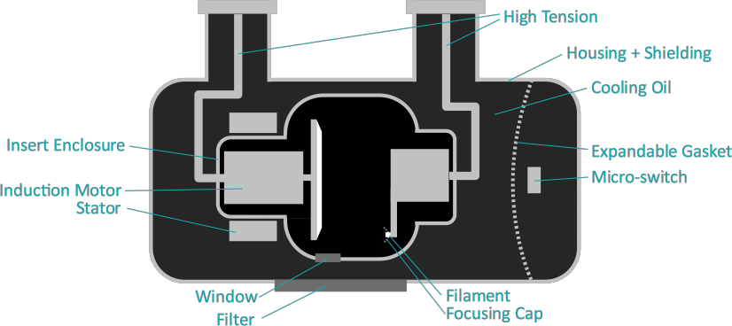
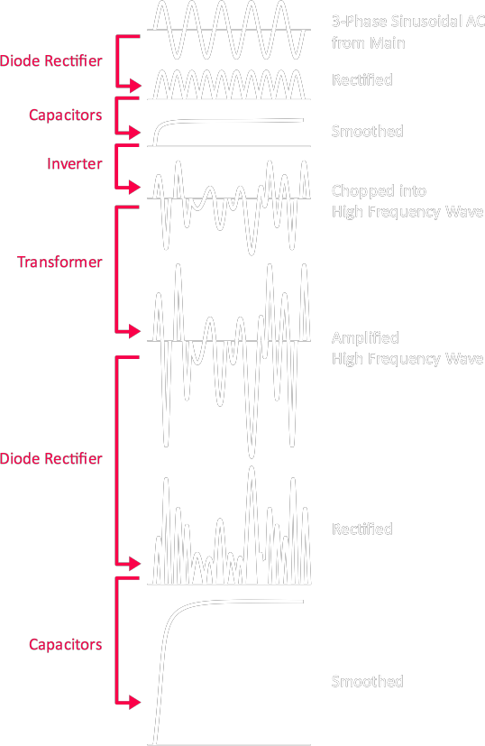
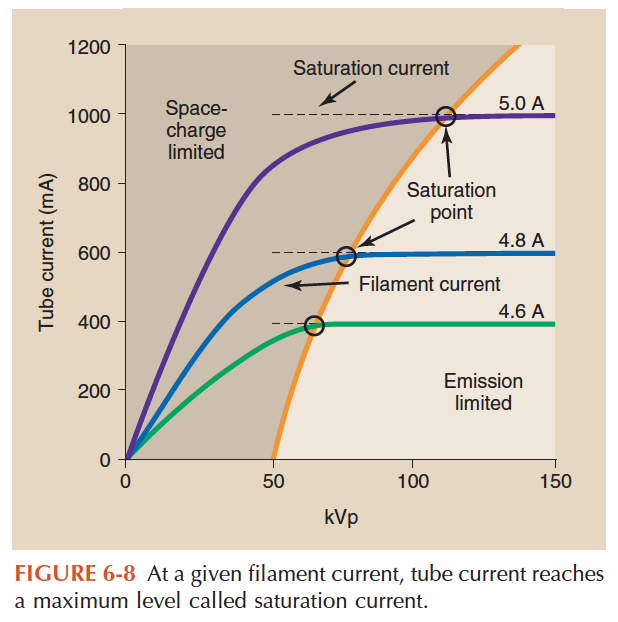
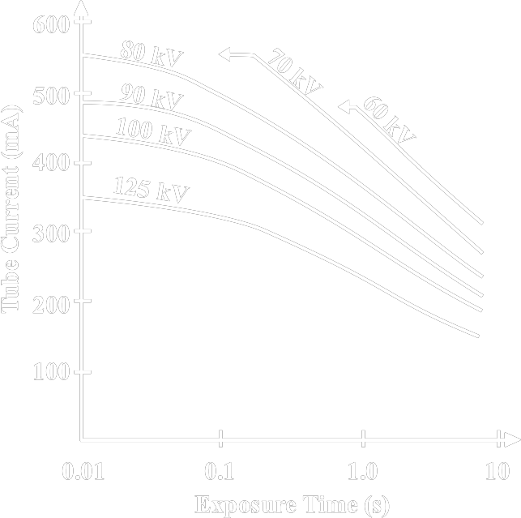

| Structure |

| Component |
Material |
|
| Anode |
Tungsten/Rhenium (Target)
|
- high atomic number
- high melting point (3422 °C)
|
|
Molybdenum/Graphite (Backing+Stem) |
- light weighted
- low thermal expansion
- high melting point
|
| Filter |
Aluminium/Copper |
- absorb low dose energy photons
|
| Cathode |
Tungsten (Filament) |
- :) good electrical conductor
- :) poor thermal conductor
- good for thermionic e- emission
- current passing through filament in A range
producing tube current in mA range
|
|
Copper (Backing) |
|
| Micro-switch |
|
when diaphragm touches the switch,
shut down tube
prevent overheat
|
| Window |
Beryllium |
| Insert |
Glass / Perspex
/ Metal
|
- Metal expensive but can prevent arching
- by maintaining a constant electric potential
|
| (Mammography) |
| Anode |
Molybdenum (Target) |
use together with Mo or Rh filter
characteristic radiation at 17.9 and 19.5 keV
it happens that the k edge of Mo = 20.0 keV
|
|
Rhodium (Target) |
use together with Rh filter
characteristic radiation at 20.3 and 22.7 keV
|
|
| Mounting |
|
| Tube Aging |
Deteriorate inherent filtration
- Target/filament evaboration
- Dust accumulating on the insert inner surface
- Tube arching
- Cooling oil impurity
- Target melting
Mechanical
- Filament burnt out
- Rotor bearing
- Anode cracking
|
| High Voltage Generator |
* Use inverter to reduce size and improve efficiency
Signal

|
| Space Charge Effect [1] |

Mechanism
a cloud of e- (=space charge) form around filament,
the electrostatic repulsion may prevent more e- further emitted by the filament.
When kV is too low for a given filament current,
the tube current will be limited due to space charge effect.
|
| Angle of Anode [2] |
Steeper Anode
| :) smaller focal spot |
|
| :( smaller useful field size |
- increase SID for larger coverage
|
| :( enhance heel effect |
- increase SID for better uniformity
- or adjust brightness
- by altering the gain of the pixels
- or through post-processing (?)
|
|
| Focal Spot |
Nominal (/Effective) Focal Spot
|
| Efficiency |
~ 1 %
~ 99 % of e- E converted to head
|
| Tube Loading Curves [2] |
Maximum Exposure Time depends on
- anode rotation speed
- focal spot size
- tube voltage waveform (?)
- anode heat capacity, heating curves, cooling curves

|